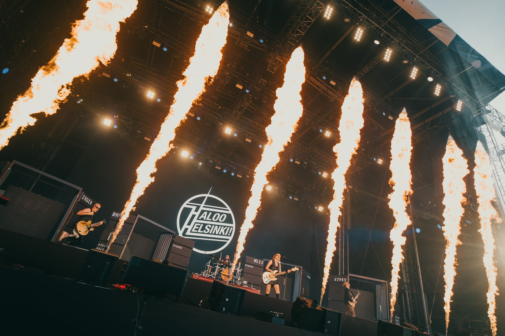
Konserttikuvaus
Valokuvaaja Ville Huuri
Kuvaan konsertteja festivaaleilla, klubeilla ja saleissa. Kuvissa näkyy esiintyjä, yleisö, tila ja valo.
Galleria
Konserttikuvaus
Valikoima kuvia seitsemästä konsertista: Bess, Kuolleiden runoilijoiden ilta, Kirk Franklin, HUHU, GLOW Festival, NRJ 30v ja Ruisrock. Mukana yleiskuvia ja lähikuvia.

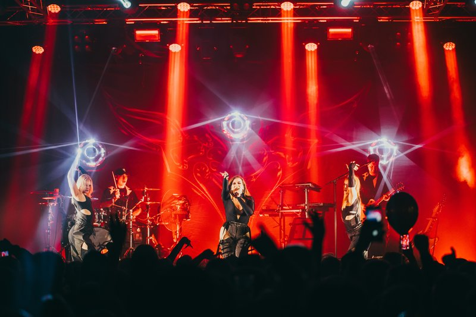

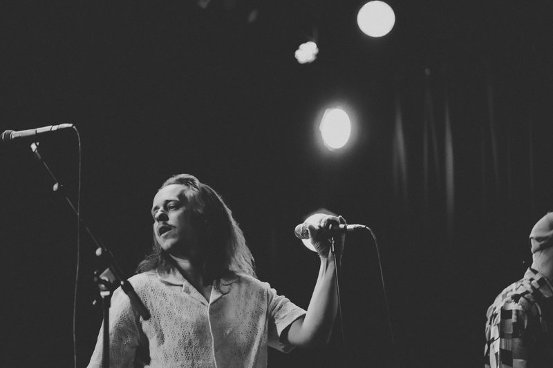

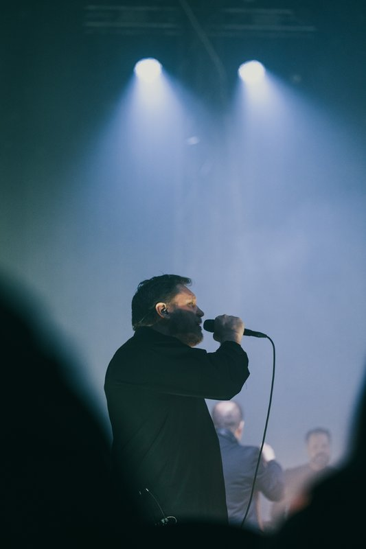

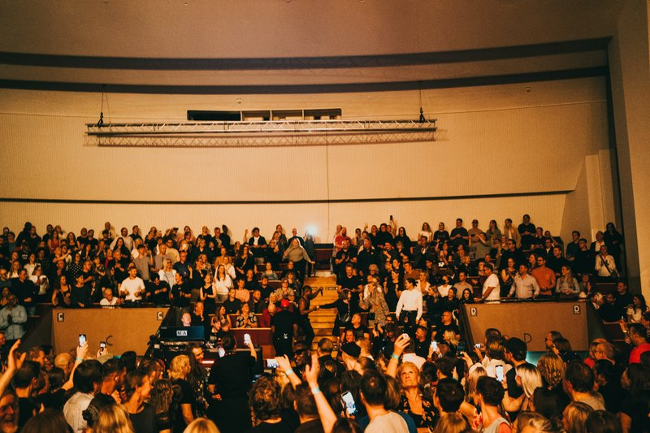

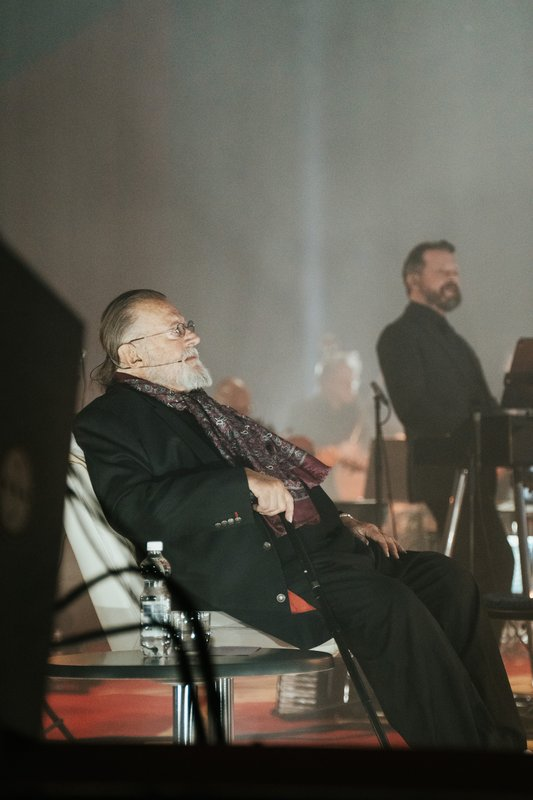

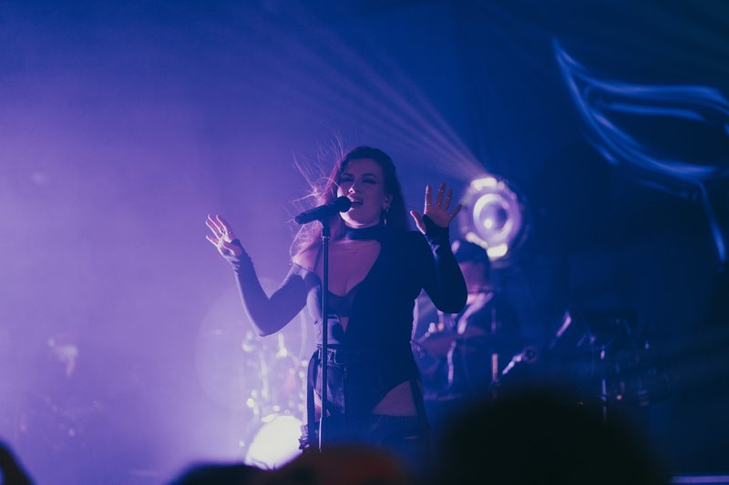

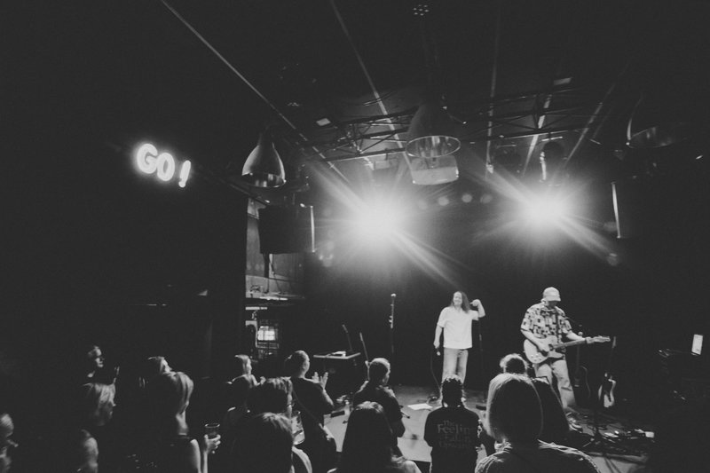

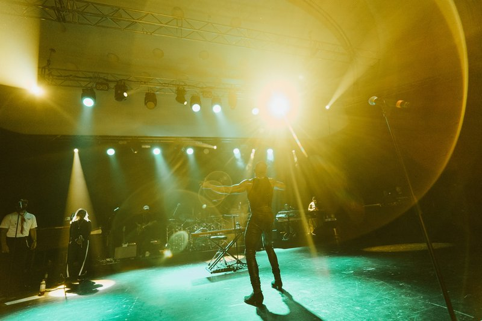

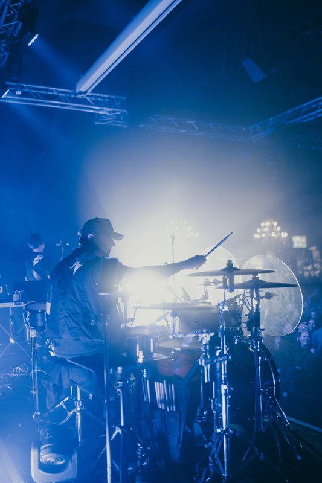

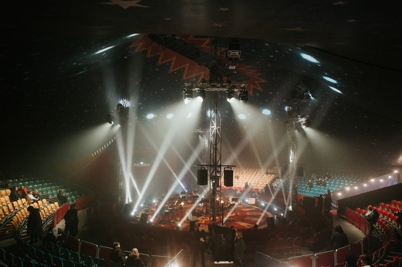

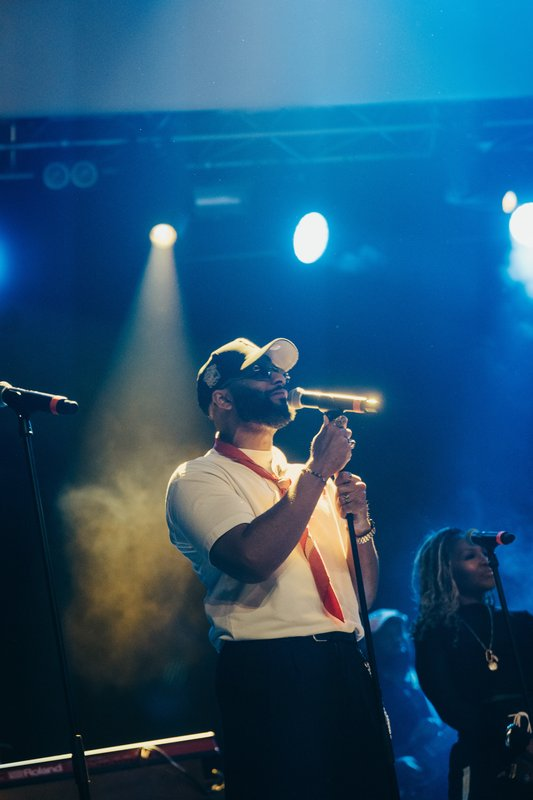

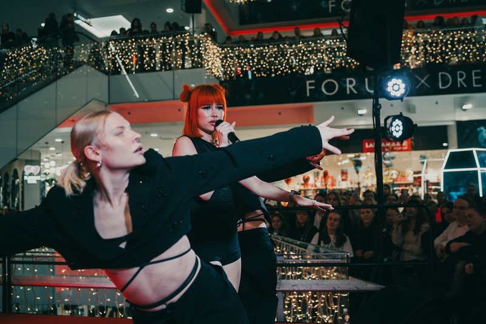


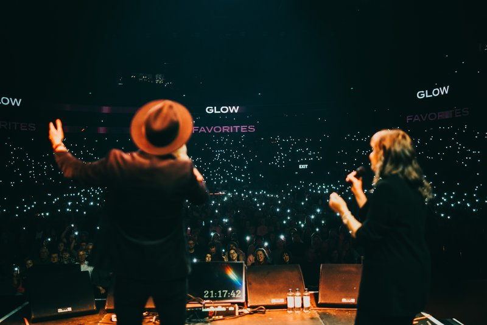

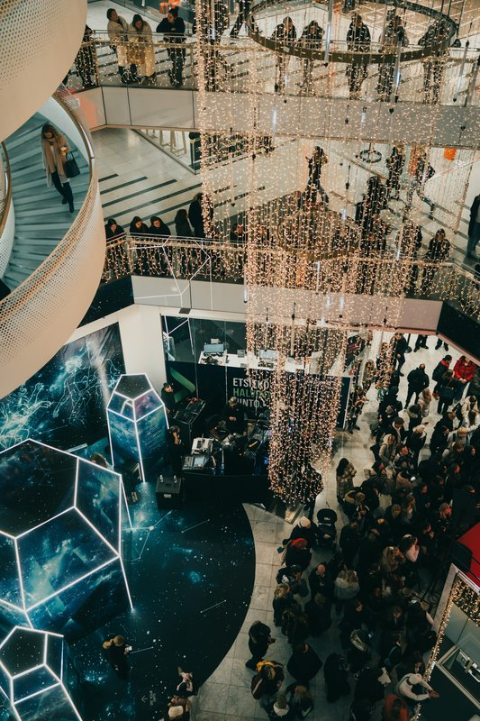

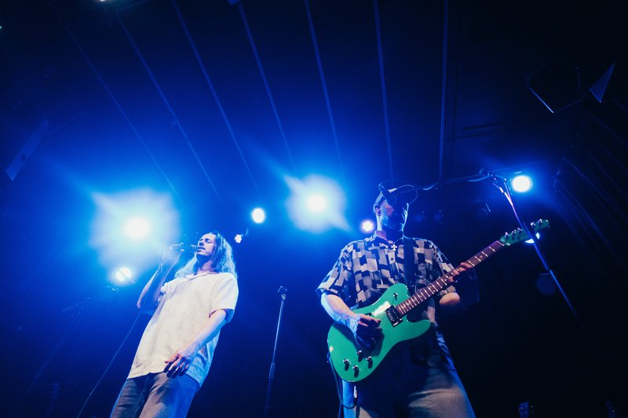

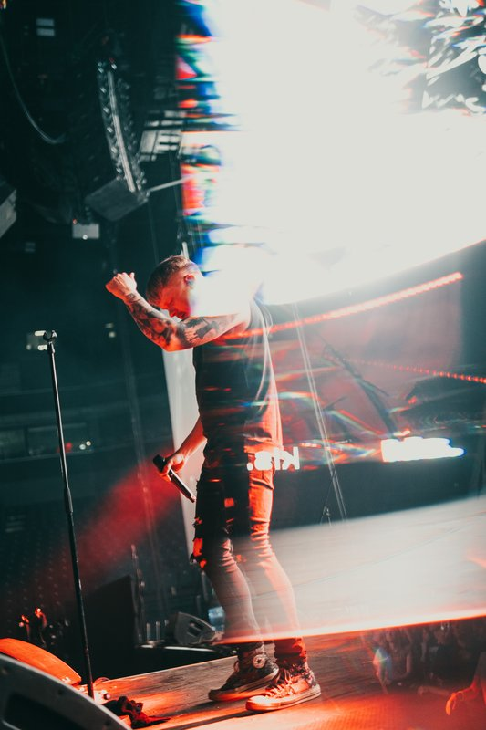

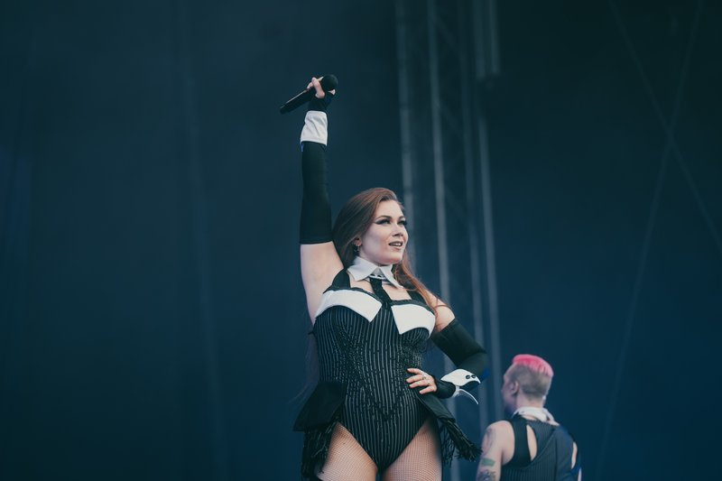

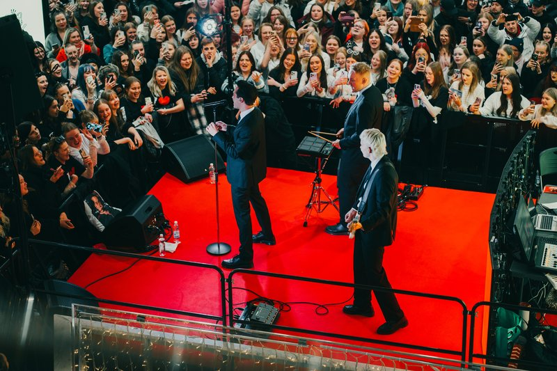

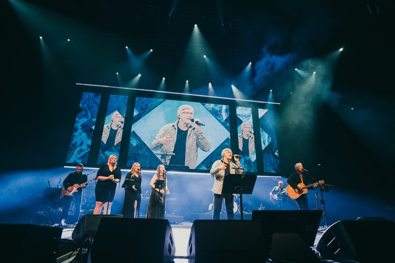

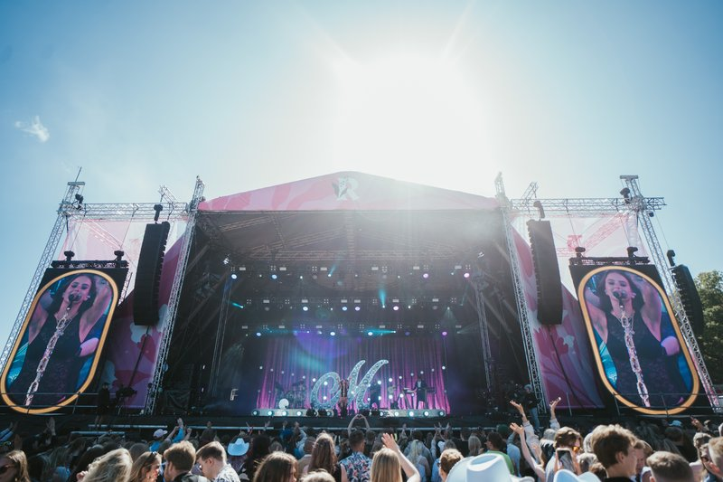
Yhteys
Kysy konserttikuvauksesta
Kerro konsertin ajankohta, paikka ja mahdolliset toiveet, niin palataan asiaan. Yhteystiedot lisätään tähän luonnokseen myöhemmin.
- Sähköposti [sähköposti] Paikkamerkki — osoitetta ei ole vielä lisätty.
- Puhelin [puhelin] Paikkamerkki — numeroa ei ole vielä lisätty.